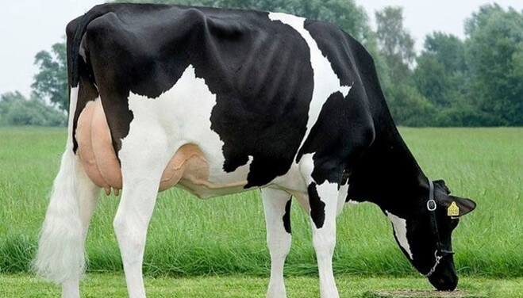
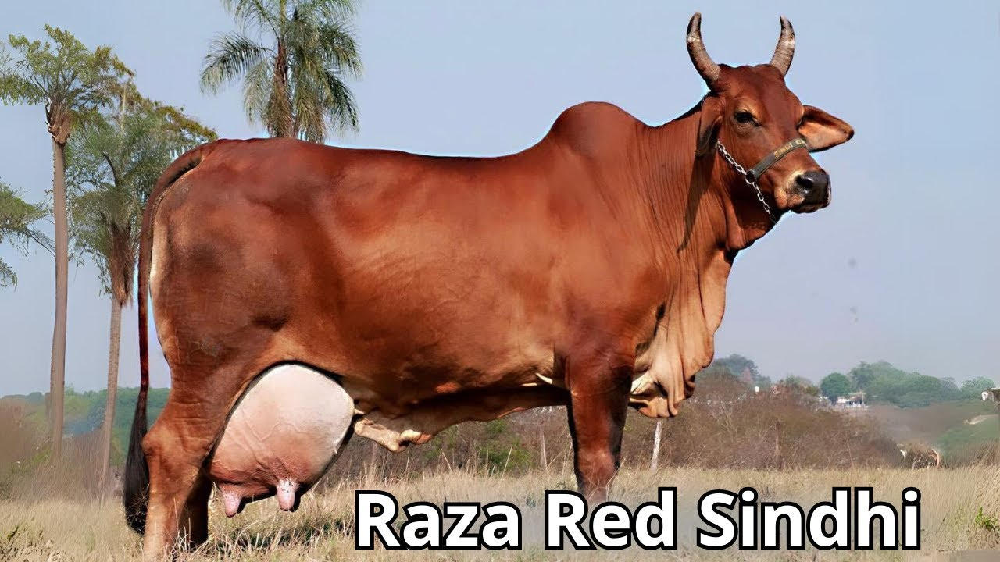
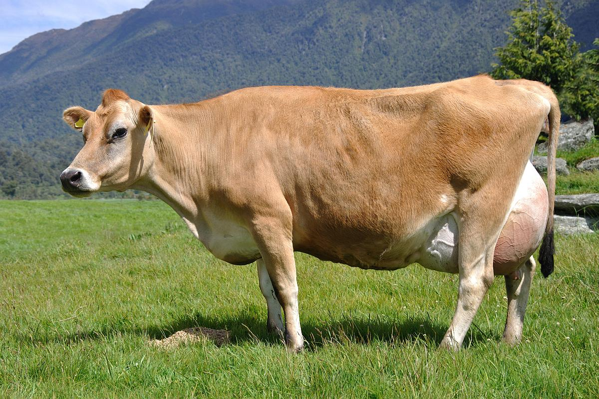
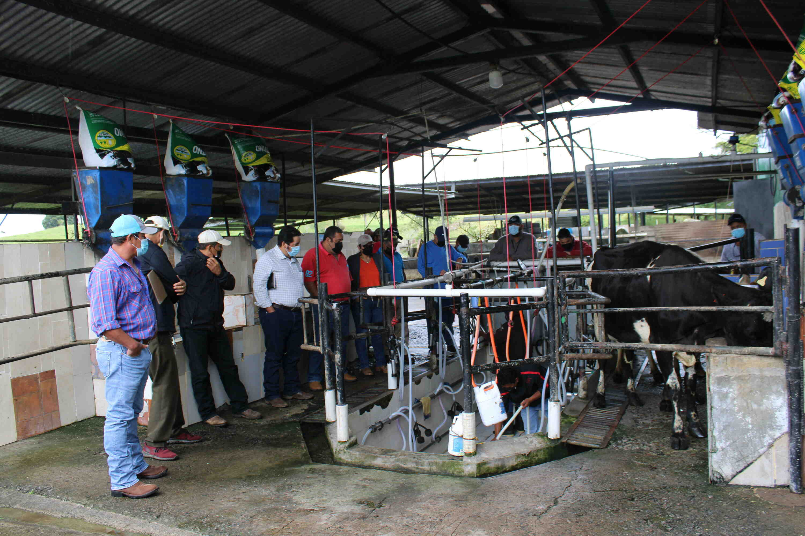
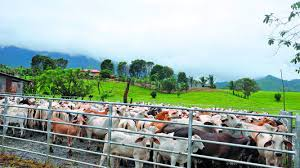
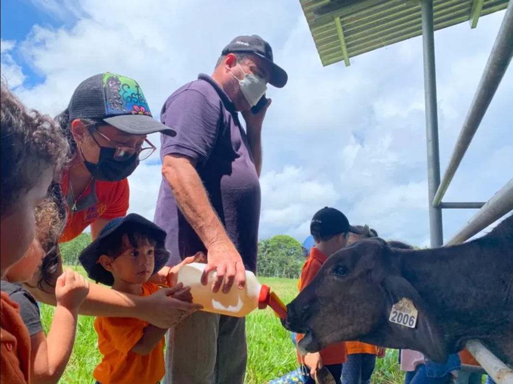

Bienvenidos a Lechería Don Joaquín
Frescura y calidad directamente del campo
En Lechería Don Joaquín, nos dedicamos con pasión a la producción y distribución de productos lácteos frescos y de la más alta calidad. Desde nuestros inicios, hemos mantenido el compromiso de ofrecer a las familias productos naturales, nutritivos y elaborados bajo los más estrictos estándares de higiene y cuidado.
Nuestro objetivo es llevar hasta tu mesa el auténtico sabor del campo, combinando tradición y procesos modernos para garantizar la frescura en cada uno de nuestros productos. En nuestra página podrás conocer más sobre nuestros productos, el proceso de elaboración, nuestras prácticas sostenibles y los valores que nos distinguen como empresa familiar panameña.
Gracias por visitarnos. Te invitamos a explorar nuestro sitio, descubrir la historia detrás de Lechería Don Joaquín y disfrutar de la calidad que nos caracteriza.
¡La frescura y el sabor natural de la leche, directo del campo a tu hogar!
¿Por qué nuestra leche es la mejor del mercado?
La calidad de la leche puede ser influenciada por varios factores, incluyendo la raza de la vaca, su alimentación, el manejo del rebaño y las condiciones de ordeño. En Lácteos y Quesos Don Joaquín, nos aseguramos de que nuestras vacas lecheras sean de razas reconocidas por su alta producción y calidad de leche.
Las diferentes razas de vacas lecheras que tenemos son:
Holstein
De origen holandés, altamente productiva en volumen.
Sindhi
De origen pakistaní, adaptada a climas cálidos y húmedos.
Jersey
De origen inglés, produce leche con alto contenido de grasa y proteína.
Nuestro producto procede de las mejores fincas. Estas son:
Finca de Grado A: Santa Genoveva
Santa Genoveva es un ejemplo de ganadería moderna, tecnificada y de alta productividad. Representa la máxima inversión y eficiencia.
Finca de Grado B: El Recuerdo
El Recuerdo es una finca ganadera tradicional y funcional. Es productiva y rentable, pero con margen de mejora mediante la tecnificación.
Finca de Grado C: La Fortuna
La Fortuna es una finca de ganadería extensiva y de subsistencia. Requiere una inversión grande y urgente en rehabilitación para ser productiva y sostenible.
